0. Cómo usar esta guía y estrategia tipo ICFES Todas las preguntas
- Lee primero lo que te piden y luego el texto.
- Subraya fechas, nombres y conectores como «sin embargo».
- Descarta lo que contradice un hecho y elige la opción más completa.
El ICFES nació como Instituto Colombiano para el Fomento de la Educación Superior. Hoy se llama Instituto Colombiano para la Evaluación de la Educación, pero conserva la sigla.
La evaluación recorre la historia política reciente de Colombia: desde el Frente Nacional (1958) hasta los gobiernos actuales. Esta guía te explica los temas, te enseña a razonar con ejemplos distintos a los del examen y te da práctica con retroalimentación. No contiene las respuestas de la evaluación: el objetivo es que aprendas a llegar a ellas tú solo.
Mapa de conceptos: cómo se conectan los temas
Cada recuadro es un tema: pulsa su título para ir a la sección o «Relaciones» para ver cómo se conecta. También puedes pulsar cualquier relación de la lista.
Ruta de estudio sugerida
Sigue este orden; marca cada paso cuando lo termines (se sincroniza con tu progreso).
Mapa: pregunta del examen → sección de la guía
| Pregunta(s) | Tema | Sección |
|---|---|---|
| 1, 20 | Frente Nacional | Secciones 2 y 12 |
| 2, 3 | Gobiernos del Frente Nacional | Sección 3 |
| 5 | Elecciones de 1970 y sus consecuencias | Secciones 3 y 4 |
| 6, 14 | Años 70 y 80, protesta social y M-19 | Sección 4 |
| 18 | Narcotráfico y gobierno de Barco | Sección 5 |
| 4, 8 | Reconocer presidentes y sus periodos (imágenes) | Sección 6 (y línea de tiempo, sección 1) |
| 7, 9 | Seguridad Democrática y Ley de Justicia y Paz | Sección 7 |
| 10, 11 | Gobierno Santos y proceso de paz | Sección 8 |
| 13, 15 | Gobierno Duque y estallido social | Sección 9 |
| 16, 17 | Gobierno Petro y Paz Total | Sección 10 |
| 12, 19 | Partidos políticos y espectro político | Secciones 11 y 12 |
Método de 5 pasos para preguntas tipo ICFES
- Lee primero la pregunta final (lo que te piden) y luego el texto: ¿piden una causa, una consecuencia, una interpretación, una contradicción, un significado o un dilema?
- Subraya fechas, nombres, verbos y conectores (sin embargo, por lo tanto, también). Los conectores de contraste (sin embargo) suelen señalar el problema central.
- Ubica la época: ¿antes o después del Frente Nacional? ¿conflicto, paz, narcotráfico? Tu línea de tiempo mental te ayuda a descartar.
- Descarta opciones que contradicen un hecho que conoces, que no responden a lo que se pregunta o que usan palabras absolutas como exclusivamente, completamente, definitivamente, automáticamente. Ojo: esto es una pista frecuente, no una regla infalible; verifica siempre con el contenido.
- Elige la opción más completa y matizada: la que reconoce avances y límites a la vez, y es coherente con el texto y con la historia.
1. Línea de tiempo interactiva 1948 – 2026 Apoyo a todas
- Va de 1948 a 2026 y ordena los hechos clave.
- Los colores indican el tipo de hecho; puedes filtrar.
- Ubicar la época te ayuda a descartar opciones.
La Constitución de 1991 reemplazó a la de 1886, que había durado 105 años.
Haz clic en cada evento para ver su explicación. Los colores indican el tipo de hecho. Filtra por categoría con los botones.
Actividad: ordena cronológicamente (presidentes)
2. El Frente Nacional (1958 – 1974) Preguntas 1, 20
- Entre 1958 y 1974 liberales y conservadores se alternaron el poder.
- Buscaba dejar atrás la violencia bipartidista y compartir el gobierno.
- Anota en tus apuntes qué logró y qué dejó sin resolver.
El plebiscito del 1 de diciembre de 1957, que aprobó el pacto, fue la primera votación nacional en la que las mujeres colombianas pudieron votar.
Contexto: ¿por qué surgió?
- La Violencia bipartidista: desde finales de los años 40, liberales y conservadores se enfrentaron en el campo y las ciudades. El asesinato del líder liberal Jorge Eliécer Gaitán (9 de abril de 1948) agravó el conflicto.
- La dictadura de Rojas Pinilla (1953 – 1957): llegó por golpe de Estado, al principio con apoyo de sectores de ambos partidos; después hubo censura y represión. Cayó el 10 de mayo de 1957 y gobernó una Junta Militar.
- Los pactos: los jefes de los dos partidos tradicionales acordaron un sistema para repartirse el poder (pactos de Benidorm 1956 y Sitges 1957, en España).
- El plebiscito del 1 de diciembre de 1957 aprobó el acuerdo; por primera vez votaron las mujeres en el país.
Características
Esquema gráfico: alternación presidencial
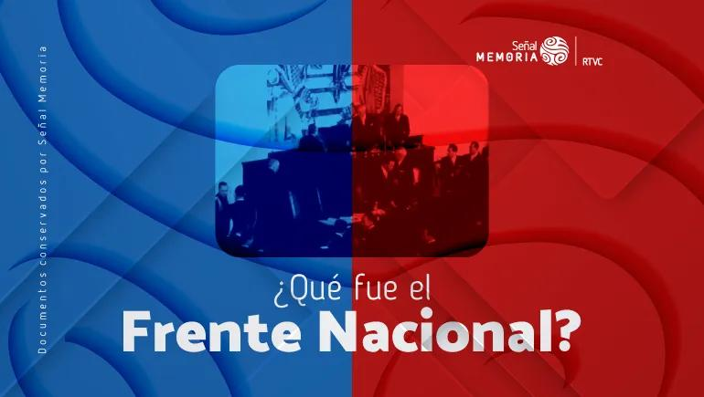
Relaciones causa → consecuencia
- Violencia bipartidista + dictadura → pacto para pacificar y devolver el poder a los civiles.
- Reparto del poder entre dos partidos → ¿qué efecto tuvo sobre la confrontación entre ellos y sobre los demás grupos políticos? Anótalo en tus apuntes.
- Poca apertura política + problemas agrarios y sociales → inconformidad, abstención y, en parte, surgimiento de guerrillas y movimientos nuevos.
Ejemplo resuelto (otro caso): el plebiscito de 1957
Fuente (paráfrasis didáctica):
«En diciembre de 1957 los colombianos fueron convocados a votar un plebiscito. El texto aprobado fijaba que durante 16 años los dos partidos tradicionales se turnarían la Presidencia y que los cargos se repartirían por mitades. Una novedad fue que las mujeres pudieron votar en una elección nacional.»
Pregunta modelo: ¿qué aspecto muestra una ampliación de la participación y cuál un límite?
Ver explicación paso a paso
- Identifica qué piden: un avance y un límite (dos cosas distintas).
- Busca el avance: «las mujeres pudieron votar» amplía quién participa.
- Busca el límite: «solo dos partidos, mitad y mitad» restringe qué opciones políticas pueden competir.
- Concluye: se amplió el derecho al voto, pero se limitó el pluralismo de partidos.
Fíjate: razonamos con el texto, separando quién vota de por quién se puede votar.
Práctica con retroalimentación
Actividad: ordena el camino hacia el Frente Nacional
Actividad: une causa y consecuencia
3. Los gobiernos del Frente Nacional Preguntas 2, 3, 5
- Lleras Camargo, Valencia, Lleras Restrepo y Pastrana Borrero.
- Reformas clave: la agraria de 1961 y la constitucional de 1968.
- En 1970 hubo elecciones muy discutidas, con denuncias de fraude.
Al principio la alternancia se pactó por 12 años; una reforma de 1959 la amplió a 16 (1958 – 1974).
| Presidente | Periodo / partido | Ideas clave para estudiar |
|---|---|---|
| Alberto Lleras Camargo | 1958 – 1962 · Liberal | Inicio del sistema. Ley 135 de 1961 (reforma social agraria) y creación del INCORA. Nace la ANAPO (1961), fuerza de oposición ligada a Rojas Pinilla. |
| Guillermo León Valencia | 1962 – 1966 · Conservador | Violencia rural persistente; operaciones militares contra zonas campesinas con presencia armada (1964). En esos años aparecen guerrillas modernas (FARC, ELN). |
| Carlos Lleras Restrepo | 1966 – 1970 · Liberal | Reforma constitucional de 1968 (estudia qué cambió y para qué); impulso a la reforma agraria; organización campesina (ANUC, 1967). |
| Misael Pastrana Borrero | 1970 – 1974 · Conservador | Elecciones de abril de 1970 muy discutidas, con denuncias de fraude. Desarrollo urbano y de vivienda. |
Cómo se razona en estos temas
- Respuesta militar vs. causas sociales: distingue lo que una operación militar puede lograr de los problemas que originaron un conflicto (tierra, pobreza, falta de Estado). Pregúntate siempre: ¿la medida ataca el síntoma o la causa?
- Reformas del Estado: si un texto habla de «planificación, intervención, modernización», pregúntate qué quiere lograr el Estado con ello y anótalo con tus palabras.
- Disputas electorales: la desconfianza en las elecciones tiene consecuencias políticas a largo plazo. Busca qué movimientos o protestas nacieron después.
Ejemplo resuelto (otro caso): la ANUC y la tierra
«En 1967 se creó la Asociación Nacional de Usuarios Campesinos (ANUC) con apoyo del gobierno. Años después, parte del movimiento campesino se radicalizó y realizó tomas de tierras porque consideraba que la reforma agraria avanzaba muy lentamente.»
Pregunta modelo: ¿qué relación hay entre la política agraria y la protesta campesina?
Ver explicación paso a paso
- Qué piden: una relación entre una política y una reacción social.
- Identifica la política: reforma agraria + organización campesina impulsada desde el Estado.
- Identifica la reacción: tomas de tierras, por lentitud percibida.
- Relación: una reforma que no cumple las expectativas puede alimentar la presión desde abajo. Fíjate en la palabra clave «lentamente»: indica una brecha entre lo prometido y lo logrado.
Práctica con retroalimentación
Actividad: ordena los presidentes del Frente Nacional
Actividad: une el presidente con su rasgo de gobierno
4. Después del Frente Nacional: protesta social y M-19 Preguntas 5, 6, 14
- Tras el Frente Nacional crecieron la protesta social y las guerrillas.
- Investiga de dónde viene el nombre del M-19.
- Las fotos históricas se leen con lugar, época y objetos.
El M-19 se desmovilizó en 1990 y su movimiento político participó en la Asamblea Constituyente de 1991.
Presidentes y rasgos
| Presidente | Periodo | Ideas clave |
|---|---|---|
| Alfonso López Michelsen | 1974 – 1978 | Primer gobierno tras el Frente Nacional. Inflación, costo de vida, conflictos laborales. Paro cívico nacional del 14 de septiembre de 1977. |
| Julio César Turbay Ayala | 1978 – 1982 | Estatuto de Seguridad (1978): más poder a las fuerzas armadas para controlar el orden público; denuncias por violaciones de derechos humanos. |
| Belisario Betancur | 1982 – 1986 | Amnistía y diálogos de paz con guerrillas (acuerdos de 1984); nace la Unión Patriótica (1985); Palacio de Justicia (nov. 1985) y tragedia de Armero (nov. 1985). |
El M-19 (Movimiento 19 de Abril)
- Origen: investiga qué ocurrió el 19 de abril de 1970 y por qué el movimiento lleva esa fecha en su nombre.
- Carácter: guerrilla urbana, muy mediática, con acciones simbólicas.
- Acciones que debes ubicar en el tiempo: robo de la espada de Bolívar (1974), robo de armas del Cantón Norte (1978-79), toma de la Embajada de República Dominicana (1980), toma del Palacio de Justicia (6 y 7 de noviembre de 1985).
- Final: desmovilización en 1990 y participación como partido (AD M-19) en la Asamblea Constituyente de 1991.
Cómo leer una fotografía histórica
- Describe sin interpretar: lugar, objetos, personas, vehículos, tono (blanco y negro/color).
- Ubica la época por las pistas (tecnología, ropa, estilo de la imagen).
- Relaciona lo observado con hechos que conoces de esa época y del lugar.
- Verifica contra cada opción: ¿qué evento calza con todas las pistas?
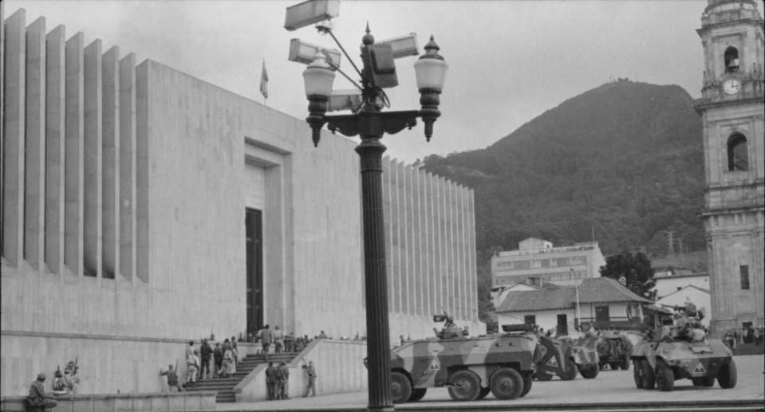
Ejemplo resuelto (otro caso): protesta regional por servicios
«En 1981, un grupo de campesinos y docentes de una región marchó para exigir mejores vías, escuelas y salarios. El gobierno declaró que se trataba de agitadores. Las organizaciones sostuvieron que reclamaban servicios que el Estado no había llevado a la zona.»
Pregunta modelo: ¿qué muestra esta protesta sobre la relación entre ciudadanía y Estado?
Ver explicación paso a paso
- Qué piden: interpretar qué revela el hecho.
- Contrasta las dos versiones: gobierno = agitación; comunidad = falta de servicios.
- Busca lo que ambas comparten: hay desacuerdo entre lo que el Estado ofrece y lo que la gente necesita.
- Conclusión: la protesta expresa demandas sociales no atendidas; no «prueba» por sí sola una conspiración.
Práctica con retroalimentación
Actividad: ordena cronológicamente
Actividad: une causa y consecuencia
5. Narcotráfico, terrorismo y el gobierno de Barco Pregunta 18
- Los carteles usaron el terrorismo para presionar al Estado.
- Barco gobernó entre 1986 y 1990.
- Pregunta clave: ¿cómo afecta esto a las instituciones?
En las elecciones de marzo de 1990 estudiantes añadieron una «séptima papeleta» para pedir una Constituyente; así se abrió el camino a la Constitución de 1991.
Contexto
- Desde finales de los 70 crecieron los carteles (Medellín y Cali). Con dinero ilegal ganaron influencia en la economía, la política y la sociedad.
- Para evitar la extradición y la presión judicial usaron el sicariato, los secuestros y el terrorismo con bombas.
- Víctimas conocidas: ministro Rodrigo Lara Bonilla (1984), director de El Espectador Guillermo Cano (1986), candidato Luis Carlos Galán (agosto de 1989), entre muchos otros.
- Virgilio Barco (1986 – 1990): gobierno liberal que inauguró la fórmula gobierno-oposición tras el fin del Frente Nacional. Enfrentó al narcotráfico, impulsó la elección popular de alcaldes (primera vez en 1988) y presenció la desmovilización del M-19 (1990).
- El movimiento estudiantil de la «Séptima papeleta» (1990) abrió el camino a la Asamblea Constituyente y a la Constitución de 1991, en el gobierno de César Gaviria.
Cómo razonar «relación entre X e instituciones»
Cuando pregunten por la relación entre un fenómeno criminal y el debilitamiento del Estado, pregúntate: ¿cómo actúa el actor sobre las instituciones? (dinero, amenaza, violencia, corrupción) y ¿qué efecto tiene sobre jueces, políticos y ciudadanos? Descarta lo que contradiga lo que sabes de los hechos de esos años.
Ejemplo resuelto (otro caso): gobierno Gaviria y el sometimiento
«En 1990 el gobierno ofreció rebajas de penas a narcotraficantes que se entregaran y confesaran delitos. Sus críticos advirtieron que las condiciones de reclusión eran demasiado benévolas; sus defensores sostuvieron que así se reducía la violencia.»
Pregunta modelo: ¿qué tensión muestra esta política?
Ver explicación paso a paso
- Identifica los dos lados: reducir la violencia (defensores) vs. castigo suficiente (críticos).
- Nombra la tensión: eficacia para bajar la violencia vs. justicia proporcional.
- Conclusión: la política buscó pacificar, pero abrió el debate sobre si había justicia. Es un patrón que reaparecerá en la Ley de Justicia y Paz (sección 7).
Práctica con retroalimentación
6. Presidentes y periodos: preguntas con imagen Preguntas 4, 8 (y 14)
- Estas preguntas piden quién es y cuándo gobernó.
- Memoriza el nombre junto con su periodo.
- Apóyate en la línea de tiempo para verificar.
Desde la Constitución de 1991 el periodo presidencial es de cuatro años. La reelección inmediata se aprobó con una reforma constitucional de diciembre de 2004 (la Corte Constitucional la avaló en 2005) y se eliminó en 2015.
Las preguntas con retrato piden dos datos al mismo tiempo: quién es y en qué años gobernó. Hay que memorizar ambos.
Tarjetas de estudio
Toca la tarjeta para ver el periodo. Intenta recordarlo antes de voltearla.
Estrategias
- Estudia los retratos oficiales en fuentes confiables (galería de presidentes de la Presidencia, Banco de la República, libros de texto) y asocia cada rostro con su nombre y periodo.
- Verifica nombre y periodo juntos. Si una opción tiene un nombre correcto con un periodo equivocado (o al revés), no sirve. Aprende los periodos para poder descartar.
- Cuidado con apellidos repetidos: hay dos presidentes con apellido Lleras y dos con apellido Pastrana (Misael y su hijo Andrés). Distingue siempre por nombre completo y época.
- Usa el contexto: época de la foto (blanco y negro/color), estilo del retrato, banda presidencial, escenario. Pero no basta: es mejor reconocer el rostro.
- Agrupa por bloques: Frente Nacional (4), años 70-80 (3 + Barco), años 90 (Gaviria, Samper), 2000 en adelante (Pastrana, Uribe, Santos, Duque, Petro).
Galería de presidentes
Toca una foto para ampliarla. La franja de color marca a los presidentes del Frente Nacional; están ordenados por año.
- Gustavo Rojas Pinilla1953–1957Llegó por golpe de Estado; cayó en 1957.
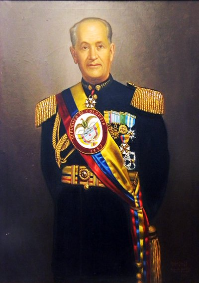
- Alberto Lleras Camargo1958–1962Frente NacionalInicia el Frente Nacional.
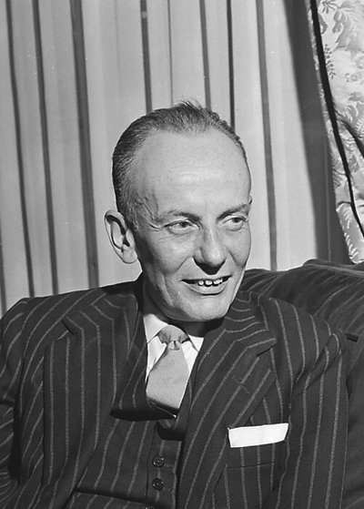
- Guillermo León Valencia1962–1966Frente NacionalOperaciones en zonas campesinas; surgen FARC y ELN.
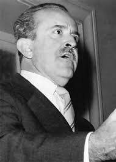
- Carlos Lleras Restrepo1966–1970Frente NacionalReforma constitucional de 1968.
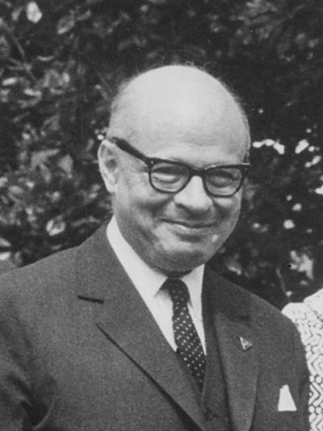
- Misael Pastrana Borrero1970–1974Frente NacionalElecciones de 1970 con denuncias de fraude.
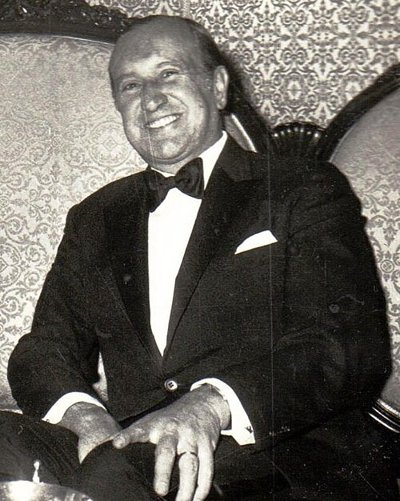
- Alfonso López Michelsen1974–1978Fin de la alternación; paro cívico de 1977.
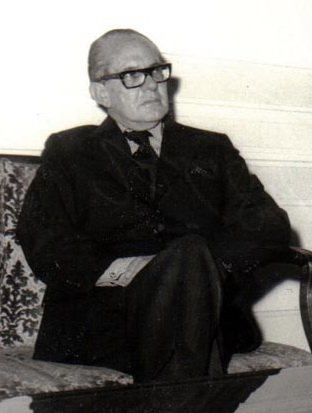
- Julio César Turbay Ayala1978–1982Estatuto de Seguridad y debate por derechos humanos.
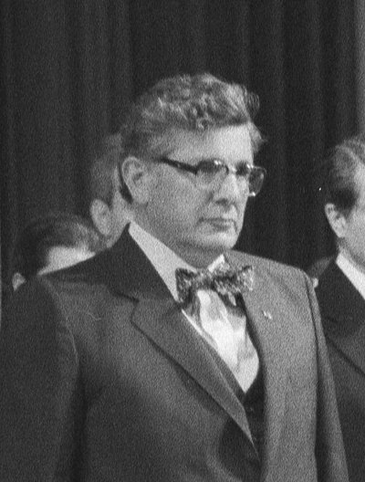
- Belisario Betancur1982–1986Acuerdos de cese al fuego con guerrillas.
- Virgilio Barco1986–1990Gobierno y oposición tras el Frente Nacional.
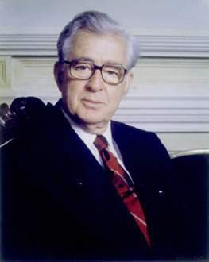
- César Gaviria1990–1994Nueva Constitución de 1991.
- Ernesto Samper1994–1998Proceso 8000 y crisis de legitimidad.
- Andrés Pastrana Arango1998–2002Diálogos en El Caguán y Plan Colombia.
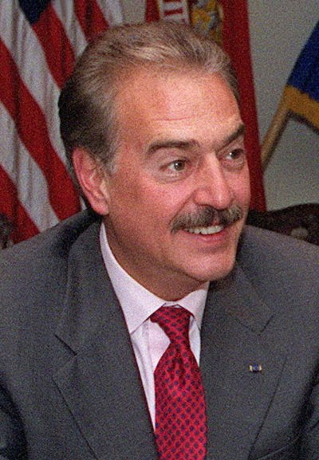
- Álvaro Uribe Vélez2002–2010Seguridad Democrática.
- Juan Manuel Santos2010–2018Ley de Víctimas y diálogos con las FARC.
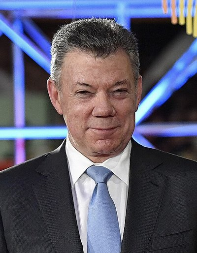
- Iván Duque Márquez2018–2022Implementación del Acuerdo de 2016.
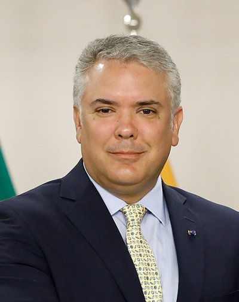
- Gustavo Petro2022–2026Ley de Paz Total.
¿Quién es? Mini práctica con la galería
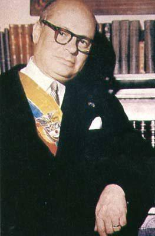
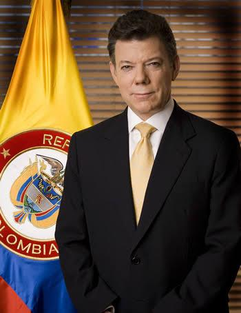
Actividad: une presidente con periodo
Práctica con retroalimentación
Créditos de las fotos
- Gustavo Rojas Pinilla: Autor desconocido. Licencia: CC BY-SA 4.0. Página del archivo
- Alberto Lleras Camargo: Autor desconocido. Licencia: Dominio público. Página del archivo
- Guillermo León Valencia: Dominio de uso libre (CC0). Licencia: CC0. Página del archivo
- Carlos Lleras Restrepo: White House Photo Office (NARA). Licencia: Dominio público. Página del archivo
- Misael Pastrana Borrero: Autor desconocido. Licencia: Atribución (según Wikimedia Commons). Página del archivo
- Alfonso López Michelsen: Archivos Nacionales de Rumania / Instituto de Investigación de los Crímenes del Comunismo. Licencia: Atribución (según Wikimedia Commons). Página del archivo
- Julio César Turbay Ayala: Marc Verhille (Bibliothèque de l'Hôtel de Ville - Bibliothèques spécialisées de la Ville de Paris). Licencia: Dominio público. Página del archivo
- Belisario Betancur: Ronald Reagan Library. Licencia: Dominio público. Página del archivo
- Virgilio Barco: PiaGustavinH. Licencia: CC BY-SA 4.0. Página del archivo
- César Gaviria: World Economic Forum on Flickr. Licencia: CC BY-SA 2.0. Página del archivo
- Ernesto Samper: Montechelo Technology. Licencia: CC BY-SA 4.0. Página del archivo
- Andrés Pastrana Arango: Departamento de Defensa de EE. UU. (DoD). Licencia: Dominio público. Página del archivo
- Álvaro Uribe Vélez: Center for American Progress. Licencia: CC BY-SA 2.0. Página del archivo
- Juan Manuel Santos: Cancillería de Perú on Flickr.. Licencia: CC BY-SA 2.0. Página del archivo
- Iván Duque Márquez: Palácio do Planalto from Brasilia, Brasil. Licencia: CC BY 2.0. Página del archivo
- Gustavo Petro: Presidencia de Colombia. Licencia: Dominio público. Página del archivo
7. Álvaro Uribe: Seguridad Democrática y Justicia y Paz Preguntas 7, 9
- Uribe gobernó de 2002 a 2010 con la Seguridad Democrática.
- La Ley 975 de 2005 creó el marco de Justicia y Paz.
- Pregunta clave: ¿qué se ofrece a los desmovilizados y qué se les exige?
La Ley 975 de 2005 estableció una pena alternativa de entre 5 y 8 años de prisión para quienes cumplieran sus condiciones.
Contexto
- Antes: el gobierno de Andrés Pastrana (1998-2002) combinó el Plan Colombia (cooperación con EE. UU.) con un proceso de paz con las FARC en una zona de distensión (El Caguán), que terminó en febrero de 2002.
- Uribe (2002 – 2010): elegido en 2002, reelegido en 2006 tras una reforma constitucional (2004).
- Seguridad Democrática: política para aumentar la presencia de la fuerza pública en el territorio, recuperar el control de carreteras y municipios y debilitar a las guerrillas. Se destacan resultados como la reducción de secuestros y homicidios; y debates por violaciones de derechos humanos (por ejemplo, las llamadas ejecuciones extrajudiciales) y por escándalos de la época.
- Autodefensas (AUC) y Ley 975 de 2005: desmovilización de estructuras paramilitares desde 2003 y marco jurídico especial llamado Ley de Justicia y Paz, con rebajas de pena a cambio de confesar delitos, entregar bienes y contribuir a la reparación.
Ejemplo resuelto (otro caso): la Comisión de la Verdad de Sudáfrica
«Tras el fin del apartheid, Sudáfrica creó una comisión en la que quienes habían cometido violencia política podían pedir amnistía si decían toda la verdad. Algunas víctimas valoraron conocer lo ocurrido; otras criticaron que los responsables no fueran a la cárcel.»
Pregunta modelo: ¿cuál es el dilema central del mecanismo?
Ver explicación paso a paso
- Qué se ofrece a los victimarios: amnistía (beneficio).
- Qué se exige a cambio: verdad completa.
- Qué reclaman las víctimas: justicia y castigo.
- Dilema: equilibrar beneficios que incentivan la paz con los derechos de las víctimas. Si solo ves un lado, tu respuesta queda incompleta.
Práctica con retroalimentación
8. Juan Manuel Santos y el proceso de paz Preguntas 10, 11
- Santos gobernó de 2010 a 2018.
- Los diálogos con las FARC empezaron en 2012.
- El 2 de octubre de 2016 hubo plebiscito y luego un acuerdo ajustado.
Santos recibió el Premio Nobel de Paz en 2016, pocos días después de que ganara el «No» en el plebiscito.
Contexto
- Santos (2010 – 2018): fue ministro de Defensa de Uribe. Como presidente promulgó la Ley de Víctimas y Restitución de Tierras (2011).
- Negociación: conversaciones exploratorias en secreto (2011-2012); instalación pública (Oslo, octubre de 2012) y mesa en La Habana, Cuba, con Cuba y Noruega como garantes y Chile y Venezuela como acompañantes.
- Agenda de 6 puntos: reforma rural integral; participación política; fin del conflicto; solución al problema de las drogas ilícitas; víctimas; implementación, verificación y refrendación.
- 2016: firma del primer acuerdo (septiembre) → plebiscito (2 de octubre) → ganó el NO por un margen muy estrecho y con baja participación → renegociación → nuevo acuerdo firmado el 24 de noviembre y refrendado por el Congreso. Santos recibió el Nobel de Paz en 2016.
- Implementación: dejación de armas verificada por la ONU (2017); JEP, Comisión de la Verdad y Unidad de Búsqueda de Personas Dadas por Desaparecidas; la FARC pasó a ser partido político.
Vocabulario
Ejemplo resuelto (otro caso): proceso con el EPL, el M-19 y la Constituyente
«A comienzos de los años 90 varios grupos guerrilleros firmaron acuerdos y dejaron las armas. A cambio, sus exintegrantes pudieron participar en política legal y en la elección de la Asamblea Constituyente de 1991.»
Pregunta modelo: ¿qué cambio de enfoque ilustra?
Ver explicación paso a paso
- Antes: confrontación militar como única vía.
- Ahora: acuerdos, garantías de participación política y reglas nuevas.
- Palabra clave: «a cambio de». Muestra un intercambio negociado.
- Conclusión: redáctala tú: ¿qué opciones tenía el Estado antes y cuáles aparecen ahora?
Práctica con retroalimentación
Actividad: ordena los hitos del proceso 2012–2016
9. Iván Duque, implementación del Acuerdo y estallido social Preguntas 13, 15
- Duque gobernó de 2018 a 2022.
- Su gobierno trató de implementar el Acuerdo de paz.
- En 2021 el estallido social llenó calles de todo el país.
El paro nacional empezó el 28 de abril de 2021 y el gobierno retiró el proyecto de reforma tributaria pocos días después.
Contexto
- Duque (2018 – 2022): recibió la implementación del Acuerdo de 2016 (JEP, reincorporación, programas de desarrollo rural en municipios más afectados).
- Desafíos de seguridad: asesinatos de líderes sociales y de excombatientes, disputas entre grupos armados ilegales y surgimiento de disidencias.
- Protestas: paro del 21 de noviembre de 2019 y el Paro Nacional que comenzó el 28 de abril de 2021, detonado por una reforma tributaria. Se sumaron demandas sociales y denuncias por uso excesivo de la fuerza. El proyecto fue retirado.
- La pandemia de COVID-19 (2020-2021) agravó el desempleo y la pobreza.
Ejemplo resuelto (otro caso): el paro del 21 de noviembre de 2019
«Sindicatos, estudiantes, comunidades indígenas y ciudadanos marcharon el 21N. Los motivos mencionados incluían rechazo a posibles reformas económicas, preocupación por la violencia contra líderes sociales y exigencias por el cumplimiento del Acuerdo de Paz.»
Pregunta modelo: ¿por qué se considera una protesta multisectorial?
Ver explicación paso a paso
- Cuenta los actores: sindicatos, estudiantes, indígenas, ciudadanos.
- Cuenta los motivos: economía, seguridad, paz.
- Conclusión: muchos sectores con motivos diversos convergieron. Eso la hace multisectorial, y explica que sea difícil resumirla en una sola causa.
Cómo razonar sobre la paz posconflicto
Firmar un acuerdo es un paso; implementarlo es otro. Anota en tu cuaderno qué retos esperarías después de firmar: ¿quién cuida los territorios que dejaron las armas?, ¿quién financia?, ¿quién ocupa los espacios vacíos?
Práctica con retroalimentación
Actividad: causa detonante o estructural
10. Gustavo Petro y la Paz Total Preguntas 16, 17
- Petro asumió la presidencia el 7 de agosto de 2022.
- La Ley 2272 de 2022 define la política de Paz Total.
- Plantea mesas de diálogo con distintos tipos de grupos.
Francia Márquez, vicepresidenta de Petro, fue la primera mujer afrodescendiente en ocupar ese cargo en Colombia.
Contexto
- Elección: segunda vuelta el 19 de junio de 2022; posesión el 7 de agosto de 2022. Francia Márquez fue la primera mujer afrocolombiana vicepresidenta. Investiga qué tuvo de novedoso esta elección (el Pacto Histórico) en la historia política del país.
- Agenda: reformas social, laboral, pensional y de salud, política de tierras, transición energética y ambiental. Estas propuestas se han debatido en el Congreso y entre la ciudadanía.
- Paz Total (Ley 2272 de 2022): política que busca negociar con grupos con carácter político (como el ELN) y facilitar el sometimiento a la justicia de estructuras criminales. Incluye ceses al fuego, mesas de diálogo y enfoque territorial.
- Retos: fragmentación de grupos y disputas territoriales; investiga qué otros desafíos se han señalado.
Nota: el periodo 2022-2026 terminó en agosto de 2026. Esta guía se centra en lo que dice tu examen; para hechos posteriores consulta a tu docente o fuentes de prensa confiables.
Ejemplo resuelto (otro caso): el Plan Colombia
«El Plan Colombia (1999-2000) combinó recursos para fortalecer a las fuerzas armadas con programas de sustitución de cultivos y apoyo institucional. Los resultados fueron mixtos: avances en seguridad, pero persistencia de cultivos y desplazamiento en algunas zonas.»
Pregunta modelo: ¿qué condiciones deben cumplirse para que un plan así tenga resultados sostenibles?
Ver explicación paso a paso
- Identifica el problema: resultados mixtos.
- Mira lo que faltó: alternativas económicas y presencia del Estado.
- Conclusión: redáctala tú: ¿qué debería cambiar en el territorio para que los resultados duren?
Práctica con retroalimentación
11. Partidos políticos y espectro izquierda – centro – derecha Preguntas 12, 19
- Un partido reúne personas con ideas para llegar al poder.
- El espectro ordena ideas de izquierda a derecha.
- La tendencia se averigua con un método, no con atajos.
«Izquierda» y «derecha» vienen de la Asamblea Nacional de la Revolución Francesa (1789), donde cada grupo se sentaba a un lado del presidente.
¿Qué es un partido político?
Organización de personas con ideas y proyecto común que busca participar en elecciones y acceder al poder. En Colombia deben tener personería jurídica y cumplir reglas (Constitución de 1991, leyes de partidos y de oposición).
El espectro político
Origen: en la Asamblea Nacional de Francia (1789) los grupos se sentaron a lados distintos. Hoy es una guía, no una etiqueta exacta: un partido puede ser de centro en un tema y más de izquierda o derecha en otro.
Cómo averiguar la tendencia de un partido (método, sin atajos)
- Entra a la página oficial o a sus documentos fundacionales.
- Revisa 4 criterios: papel del Estado en la economía, igualdad social, orden y seguridad, valores y tradiciones.
- Contrasta con lo que la prensa y los politólogos dicen y con las votaciones del partido en el Congreso.
- Anota fuentes: no todas las clasificaciones coinciden.
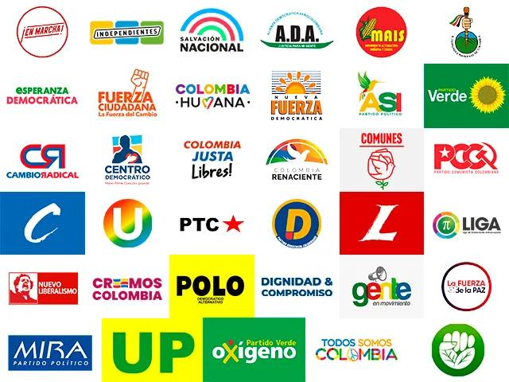
¿Por qué puede haber muchos partidos?
Un sistema pasa de pocos a muchos partidos cuando se combinan: reglas de entrada más abiertas (por ejemplo, la Constitución de 1991 reconoció el derecho a fundar partidos), fin del reparto del poder entre dos, crisis de confianza en los partidos tradicionales, personalismo (listas alrededor de un líder) y reformas electorales que intentan ordenar el sistema (como la de 2003). Úsalo como caja de herramientas para argumentar con tus palabras (ver sección 12).
Actividad: ¿qué tendencia sugiere cada propuesta?
Ejercicio sobre propuestas (no sobre partidos). Elige la tendencia más cercana.
Práctica con retroalimentación
12. Cómo responder preguntas abiertas Preguntas 12, 19, 20
- Plantilla: tesis, argumentos y cierre.
- Apoya cada argumento con datos, fechas o ejemplos.
- Revisa tu texto con la lista de autoevaluación.
Aristóteles dijo que persuadir se apoya en tres recursos: el carácter de quien habla (ethos), la emoción (pathos) y la razón (logos).
Plantilla para «argumenta», «explica por qué» y «qué es»
- Tesis (1 frase): responde directo a la pregunta.
- Contexto: cuándo, dónde, quiénes.
- Dos o tres argumentos con datos concretos (fechas, nombres, hechos).
- Consecuencia o valoración: qué cambió, qué quedó pendiente.
- Cierre: una frase que retome la tesis.
Ejemplo resuelto (otro tema): «Argumenta qué es la Constitución de 1991»
Ver respuesta modelo comentada
Tesis: La Constitución de 1991 es la norma fundamental vigente en Colombia, que reemplazó a la de 1886 y redefinió los derechos y las instituciones. (define + ubica)
Contexto: Surgió de una Asamblea Constituyente elegida en 1990, en medio de violencia y deseo de cambio; participaron fuerzas diversas, incluyendo exguerrilleros. (quiénes, cuándo)
Argumentos: creó la tutela, reconoció a Colombia como Estado social de derecho y multiétnico y pluricultural, y amplió la participación (mecanismos como plebiscito y referendo). (dato + explicación)
Cierre: Por eso se considera un pacto que buscó abrir el sistema político y proteger derechos. (retoma la tesis)
Ejemplo resuelto (otro tema): «Explica por qué se aprobó la elección popular de alcaldes»
Ver respuesta modelo comentada
Causas posibles: (1) crisis de representación y deseo de más participación local; (2) el modelo centralista no resolvía problemas locales; (3) el contexto de reforma política de los años 80. Cada causa va con una frase que la explica. Después, una consecuencia: los alcaldes pasaron a responder ante los votantes y se fortaleció la descentralización.
Lista de autoevaluación de tu respuesta
13. Autoevaluación final (15 preguntas) Repaso general
- Son 15 preguntas nuevas, con casos distintos.
- Responde todas y pulsa Calificar.
- Repasa lo que fallaste y vuelve a intentarlo.
Hermann Ebbinghaus mostró en 1885 que repasar en varios días espaciados ayuda a recordar más que estudiar todo de una sola vez.
Preguntas nuevas, con casos distintos a los de la evaluación. Responde todas y pulsa Calificar.
Guía elaborada para estudio. Verifica fechas y datos con tu cuaderno y tu docente.